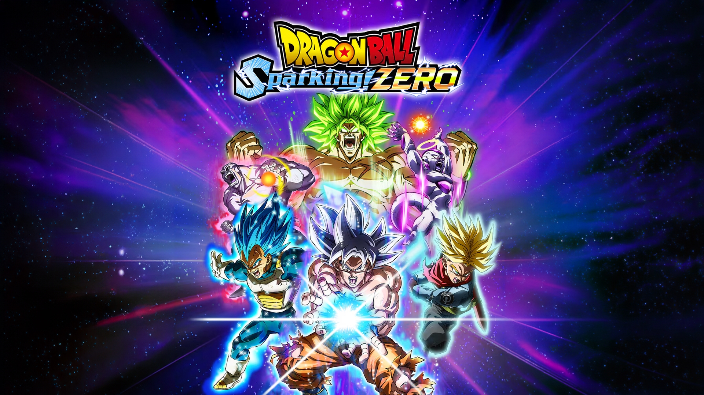

DragonBall Sparking Zero

Dragon Ball:
Sparking! Zero est un jeu vidéo de combat
éveloppé par Spike Chunsoft et édité par Bandai Namco Entertainment
se déroulant dans l'univers fictif de la saga Dragon Ball,
sorti en octobre 2024